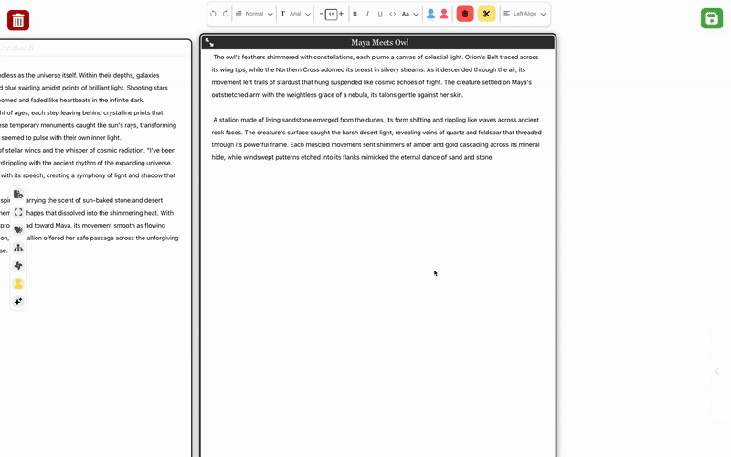
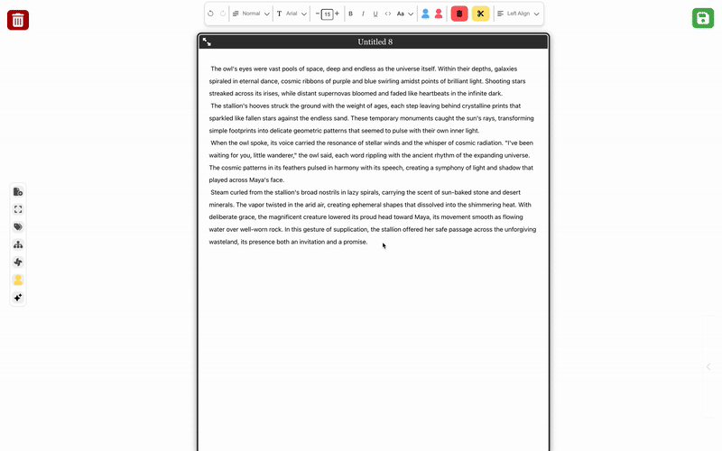
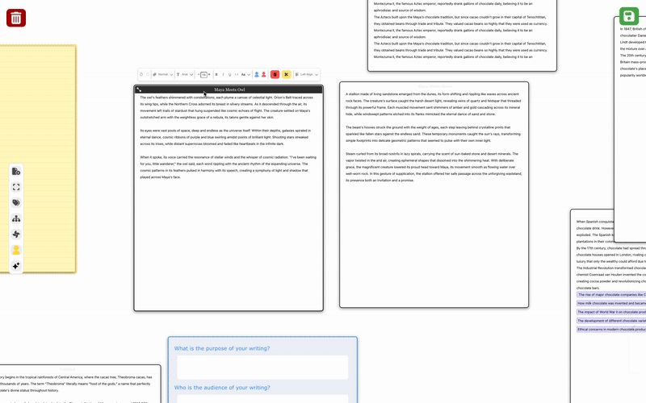

Some Features of Script&Shift
Idea Ivy

Tone Tara

Combining Layers

Tearing Layer

Comparing Layers

Good writing is a dynamic process of knowledge transformation, where writers refine and evolve ideas through planning, translating, and reviewing. Generative AI-powered writing tools can enhance this process but may also disrupt the natural flow of writing, such as when using LLMs for complex tasks like restructuring content across different sections or creating smooth transitions.
We introduce Script&Shift, a layered interface paradigm designed to minimize these disruptions by aligning writing intents with LLM capabilities to support diverse content development and rhetorical strategies. By bridging envisioning, semantic, and articulatory distances, Script&Shif's interactions allow writers to leverage LLMs for various content development tasks (scripting) and experiment with diverse organization strategies while tailoring their writing
@misc{siddiqui2025scriptshift,
title={Script&Shift: A Layered Interface Paradigm for Integrating Content Development and Rhetorical Strategy with LLM Writing Assistants},
author={Momin Siddiqui and Roy Pea and Hari Subramonyam},
year={2025},
eprint={2502.10638},
archivePrefix={arXiv},
primaryClass={cs.HC},
url={https://arxiv.org/abs/2502.10638},
}Have any questions? Reach out to Momin!